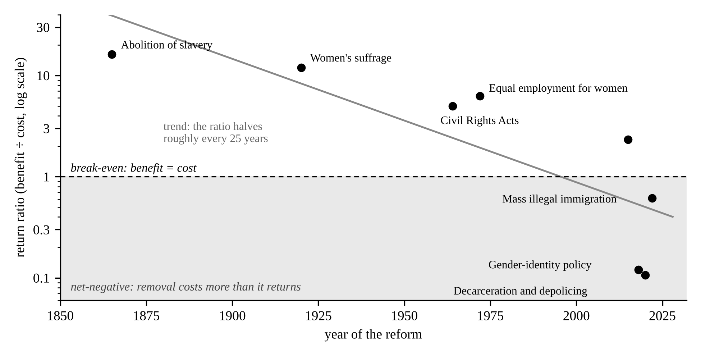

The End of Progress
Note: This synopsis was generated with the assistance of AI from original material created by the author, who has reviewed and edited it. The AI was trained on the author's writing. It condenses a larger body of work and is not the complete argument.
For two centuries the West has conceived of moral progress as the removal of unjust constraint. This synopsis argues that the paradigm built on that definition has run out of progress to make. Drawing on Kuhn's account of scientific paradigms, it treats moral orders as paradigms carried less by arguments than by exemplars and vocabularies. The reigning paradigm has one operation, subtraction, and subtraction always faces diminishing returns: each successive emancipation helps fewer people, helps them less, and costs everyone else more. A rough quantification of eight reforms, from abolition to the present, shows the ratio of benefit to cost halving roughly every 25 years and falling below break-even in the last decade. Having removed legitimate targets, and lacking a rule of when to stop, the paradigm now consumes the structures it was meant to serve — the serpent now eats its own tail. Its own institutions have begun to reverse it, and AGI will further reveal its inadequacy. The paper closes with the role of language in the contest between paradigms, and with the turn: the moment that the West stops tearing down and begins, again, to build.
1. The Serpent and Its Tail
The symbol of a dragon biting its own tail, the ouroboros, once meant eternity. Today, if often symbolizes chaos. By it, I mean something more specific. A creature whose only mode is consumption, once it has eaten everything around it, has nothing left to eat but itself, and the eating feels just as good to the head.
That is, roughly, the state of the West's moral culture. For two hundred years we have understood moral progress as liberation, the removal of unjust and almost exclusively social constraints. It worked well: it freed the slaves, enfranchised women, and more. The feeling that animated it then is the same feeling that animates activists today — only we are out of slaves. The supply of arbitrary constraint has run low, yet an engine built to remove doesn't sit idle when its fuel is gone. It keeps removing. Instead of producing good, which is the justification of liberation, it now produces harm, and has lost legitimacy.
My claim is not that progress was bad, nor that its champions are wicked, but that the paradigm is finished. It has accomplished its goal and is all out of legitimate work. We are like a cab driver who drives without a destination: content to drive, he doesn't know when he has passed his stop, and any passenger who tells him so is accused of attacking the "progress" of driving. A morality defined by removal has no way to know when it is finished. It is finished, and what follows shows why, shows that it is ending, and details what comes next. The full argument appears in a longer working paper (Niehaus 2026a).
2. Morality Runs on Paradigms
Kuhn. In 1962 the historian Thomas Kuhn argued that science does not advance by steady accumulation. It moves through paradigms: long, stable periods in which a community shares a framework that tells it what the world contains, which questions are worth asking, and what a good answer looks like. Inside a paradigm, scientists do "normal science," solving the puzzles the framework sets. Over time, anomalies (results that the paradigm cannot explain) pile up. Defenders patch them. Eventually the patches show, confidence fails, and a rival that solves the anomalies better takes over, less by refuting the old view than by winning the young while the old generation retires (Kuhn 1962).
Exemplars. The core of a paradigm, according to Kuhn, is not its theory but its exemplars: concrete solved problems that students learn by working and then use as templates for new cases. A physics student does not memorize laws and apply them; he learns to see a new problem as another pendulum (Kuhn 1970). Competence lives in the model case, not in the maxim.
Moral paradigms. Morality works the same way. We are trained less by memorizing principles and more by imitating people we see as good, inside a tradition that tells us what goodness looks like (MacIntyre 1981). A moral paradigm therefore has four working parts: an exemplar people recognize as good without argument; a protocol, the routine move the exemplar teaches; a lexicon, words that carry verdicts inside them; and gatekeepers who decide what counts. Schools and increasingly media teach the exemplars, institutions reward the protocol, and the vocabulary makes some thoughts easy to say and others nearly impossible. Kuhn called the scientific version normal science. The moral version is normal virtue.
Legitimacy before morality. A paradigm operates at two layers. The visible one is morality: the verdicts a culture renders, the arguments it wins and loses. Beneath it lies legitimacy: the silent sense of what is real, relevant, and worth counting at all. Power in a culture is decided at the lower layer. Considerations that the paradigm does not recognize do not lose the argument but instead never become acceptable arguments in the first place. Hence the decisive contest is never over who is right within the frame but rather what the frame counts. This is why paradigms are rarely refuted; they are replaced.
3. The Paradigm of Progress
The exemplar. The hero of the current paradigm is: the liberator. The abolitionist, the suffragette, the civil-rights marcher, the person who "comes out." Each is honored for a single act, exposing an arrangement as oppressive and removing it. The protocol is: find the constraint; remove it. The villain it casts is whoever defends a constraint, which tends to be, almost by definitions, conservatives. Its intellectual charter is what Ricoeur called the hermeneutics of suspicion, which reads every practice for the power it hides (Ricoeur 1970). Its spirit is authenticity, on which the self's task is to throw off whatever it did not choose (Taylor 1991). Its result is a culture not of binding commitments but their release (Rieff 1966).
Subtraction. Beneath these expressions lies the primary protocol: subtraction. The good is defined negatively, as freedom from, so the paradigm's highest achievement is always a subtraction. Structure is guilty until proven innocent. And because exemplars train perception, adherents do not hold a theory that structure is suspect — they see it as suspect, as immediately as one recognizes a face. Hence the paradigm feels beyond rational correct, and why its adherents experience disagreement not as an argument but as a moral failure.
Borrowed capital. A morality of pure subtraction must borrow the goods in whose name it subtracts. The current paradigm borrowed from Christianity: the equal worth of souls, special concern for the weak, etc. It kept the conclusions and discarded the premises (Siedentop 2014; Holland 2019). Thus, the paradigm can no longer say why persons are equal, only that disparity is suspect. So equal dignity, a moral claim, drifts into a demand for equal outcomes, an empirical one, and every difference reads as a wrong to be righted. Meanwhile the goods a society actually lives on (meaning, obligation, trust, family, continuity) are built goods, and no operation whose only move is removal can make them. Our current paradigm can remove but it cannot build, which is necessary for life. To survive, parasites on true, constructive morality.
4. The Law of Diminishing Returns
A finite supply. If the paradigm's good is the removal of unjust constraint, then its supply of worthwhile work is limited by the stock of constraints that are genuinely arbitrary, that track nothing real about the people they bind. That stock was plentiful in 1800, but success depletes it. Every removal shrinks what remains. As arbitrary constraints are removed, the next act of liberation targets constraints that are less arbitrary and more likely to be holding up something legitimate, and its return falls, even to less than zero.
The calculus. The return on any reform can be stated as a ratio. Its benefit is the number of people it helps, multiplied by how much it helps them. Its cost is the number of people who bear its burdens, multiplied by how heavily. Abolition helped millions enormously and cost a few hundred thousand slaveholders. Women's suffrage helped half the adult population substantially and cost men a diluted vote. And so on. But then the curve turned. The trans movement, for instance, helps a ~1% of the population — and arguably doesn't actually help them at all — while imposing significant costs on the entire population, compelling them to lie and undermine their reason and perception (to say nothing of the harm done to and in women's spaces or the children we've harmed by giving medical treatments whose evidence base the most thorough review to date called "remarkably weak" (Cass 2024). Further, mass illegal immigration helps many people a great deal, but its costs fall on an entire nation, in public funds, in wages at the bottom of the labor market, in housing, in the rule of law, and above all in a people's consent to the composition of its own polity (National Academies 2017; Putnam 2007).
Table 1. The diminishing returns of emancipation, eight cases.
| Reform | Year | Reach (% helped) | Depth (0–10) | Burden (% bearing cost) | Severity (0–10) | Return |
|---|---|---|---|---|---|---|
| Abolition of slavery | 1865 | 12.6 | 10 | 1.3 | 6 | 16 |
| Women's suffrage | 1920 | 31 | 6 | 31 | 0.5 | 12 |
| Civil Rights Acts | 1964 | 10.6 | 8 | 17 | 1 | 5.0 |
| Equal employment for women | 1972 | 51 | 3 | 49 | 0.5 | 6.2 |
| Same-sex marriage | 2015 | 3.5 | 4 | 20 | 0.3 | 2.3 |
| Gender-identity policy | 2018 | 1 | 3 | 50 | 0.5 | 0.12 |
| Decarceration and depolicing | 2020 | 0.6 | 4 | 15 | 1.5 | 0.11 |
| Mass illegal immigration | 2022 | 4.1 | 6 | 100 | 0.4 | 0.61 |
Notes. Reach is the share of the U.S. population helped at the time of the reform; Burden is the share bearing its costs. Depth and Severity are scored 0–10. Return = (Reach × Depth) ÷ (Burden × Severity); above 1, a reform returns more than it costs. Populations from the 1860 census (3.95 million enslaved; 393,975 slaveholders), the Williams Institute (2025: ~1% of Americans 13+ identify as transgender), and Pew Research Center (2025: 14 million illegal immigrants in 2023). Depth and severity are the author's estimates and are offered to be argued with.

What the numbers show. The method is crude, and the depth and severity scores are judgments that reasonable people will set differently. But the argument needs only the direction, and the direction is clear. Fitted to the eight cases, the return halves roughly every twenty-five years (Figure 1). Double every benefit score after 1970 and the last three reforms still return between 0.2 and 1.2, an order of magnitude below abolition. The early reforms helped the many at the expense of the few. The modern ones help the few at the expense of the many. That is the shape of a paradigm running out of progress.
No stopping rule. A paradigm with a positive goal would stop near break-even. This one can't, because inside it idleness looks like complicity: any remaining structure is presumed to be a wall someone needs torn down. Having exhausted arbitrary targets, it "progresses" to reclassify legitimate structure as oppression and seeks to remove it: the distinction between the sexes, the border, etc. It cannot tell a prison wall from a wall that holds up the roof, because it trained people to detect constraints, not to discern what a constraint is for. C. S. Lewis envisaged this: "You cannot go on 'seeing through' things for ever. The whole point of seeing through something is to see something through it" (Lewis 1943). In autoimmune disease, the immune system continues to run the protocol that once saved the body, but having lost the distinction between self and invader, it begins to attack healthy tissue. It begins to destroy itself, i.e. eat its own tail. And, importantly, its agents are not malfunctioning or even evil necessarily — they are being faithful, just to bad orders.
Detector drift. The paradigm also recalibrates its own instruments. As real harm grows rare, the threshold for calling something harm drops. The psychologist Nick Haslam documented this "concept creep": abuse, trauma, bullying, and prejudice have stretched outward to new kinds of cases and downward to milder ones (Haslam 2016). When blue dots become rare, people begin calling purple dots blue (Levari et al. 2018). A smoke alarm that grows more sensitive as the house grows safer will eventually go off at toast. This is why the paradigm feels most extreme precisely when the world is most free.
5. The Signs of Exhaustion
Kuhn says paradigms fall when anomalies accumulate faster than their defenders can patch them. They are accumulating now, and the most telling come from the paradigm's own strongholds.
Its own institutions are reversing it. In 2022 San Francisco, as progressive a city as exists, recalled three members of its school board and then its district attorney. In 2024 California voters passed Proposition 36 with about 68 percent of the vote, rolling back key parts of the decarceration measure they had approved a decade earlier. The same year Oregon recriminalized drug possession, ending its experiment with decriminalization after three years. Elite universities that had dropped testing requirements in the name of equity reinstated them, Dartmouth citing its own finding that test-optional admissions hurt the very disadvantaged applicants they were meant to help. In 2023 the Supreme Court ended race-conscious admissions (SFFA v. Harvard). England, Sweden, and Finland restricted pediatric gender medicine after systematic reviews, and in 2025 the Supreme Court upheld Tennessee's restrictions (United States v. Skrmetti). Major corporations dismantled the diversity programs they had built in 2020. These are not defeats inflicted by enemies. They are retreats ordered by believers who ran the experiment, read the results, and obeyed.
Legitimacy is draining. Average confidence in major American institutions stands at 27 percent, one point above its record low (Gallup 2026). In 2025 the share of Americans "extremely" or "very" proud to be American fell to 58 percent, the lowest Gallup has recorded (Gallup 2025). Legitimacy is the lower layer of a paradigm. When it goes, the verdicts above it follow.
People no longer say what they believe. In 2020, 62 percent of Americans told the Cato Institute that the political climate kept them from saying things they believe (Ekins 2020), and even this is likely understated. Timur Kuran called this preference falsification: public support for a creed that private belief has already abandoned (Kuran 1995). It is the signature of a paradigm held up by fear rather than conviction, and it explains why such paradigms look stable right up to the moment they collapse.
Its words have inflated past meaning. Analyses of tens of millions of news articles show terms denoting prejudice surging across the 2010s (Rozado et al. 2023). When "racist" and "fascist" describe a strict principal and a border wall alike, they stop distinguishing anything, and words that no longer distinguish no longer persuade. Like inflated currency, it has lost most of its value, retaining its force less by credible claims but by the ossified social enforcement, i.e. the trained responses to them.
6. The Paradigm Under Leverage
Exhaustion is chronic, and AGI makes it acute: it multiplies the effect of whatever it is pointed at and drives the cost of action toward zero. Every deconstructionist property of the paradigm that was merely corrosive at human scale becomes civilizationally threatening at machine scale, and it fails in four ways. First, it has no objective, only a gradient. It can always name the next thing to remove but never what to build, and a powerful optimizer must be aimed at something — "less constraint" is not a target. Second, destruction scales and construction does not. Tearing down is cheap and building is slow and fragile, so a paradigm that celebrates removal is calibrated to exactly the wrong direction at exactly the wrong time. Third, governing powerful systems is a legitimacy problem (who may steer, and by what right), and a paradigm whose signature move is exposing every authority as arbitrary can strip legitimacy from any steward while conferring it on none. Fourth, safety depends on the very structures the paradigm is trained to suspect: durable institutions, binding commitments, trust, and coordination.
Equality under leverage. AGI also breaks the paradigm's central equation of equal dignity with equal outcomes. Leverage magnifies the real differences among people in skill, judgment, and will. When one engineer with machines can do what ten thousand once did, differences that once made little difference now make all the difference. A frame that reads every disparity as injustice will meet disparities it can neither deny nor abolish, and the only instrument able to flatten them is coercion that grows with the leverage itself, leading to absolute tyranny. Equality before the law and equality of outcome have always pulled in opposite directions (Hayek 1960); under high leverage the gap becomes a choice between giving up the conflation or freedom. And if machines make much human labor economically optional, a morality with no account of what human beings are for will have nothing to tell billions of people about why their lives matter or what to do with them.
Scalable philosophical infrastructure. We need is a philosophical infrastructure that scales. Our frontend (capitalism, science, technology, engineering) is growing exponentially. Our backend, the moral operating system that says what it's for is already failing and only worsen — frontend gains on a broken backend compound the problem. The only foundation large enough to scale with us is reality itself. A morality grounded in what is true can take error as input and correct itself, where the current paradigm can only resist until it snaps. But reality supplies the ground, not the direction. We must build a new vision, a positive account of the good we're reaching for, the world we want to build.
7. Win the Words
Three layers. Every worldview lives in three layers: the mental and moral (beliefs and values), the symbolic (words, slogans, narratives), and the material (policies, institutions, laws). Words are the middle layer, the vehicle the intangible rides on and the raw material the tangible is built from (Popper 1972; Searle 1995). Change the vocabulary and the framing, and beliefs often follow, and then policies.
Words store the training. Kuhn located a paradigm in its lexicon: a revolution, he argued, is a change in the categories that sort the world before any theory is applied (Kuhn 2000). If exemplars train perception, words store the training. A word carries a model case, a verdict, and an emotional charge, and it delivers all three every time it is spoken, without argument, as the word "racist" does today. The paradigm reproduces itself whenever its words are used, including by those who think they oppose it, i.e. the Right reinforces this paradigm and secures their defeat every time they engage the Left with their vernacular. In 2014, an inquiry into the English town of Rotherham found that some 1,400 children had been sexually exploited over sixteen years, and that some officials had been reluctant to name the ethnic origins of the perpetrators for fear of being thought racist (Jay 2014). No one disputed the facts. A word, "racist," decided which facts could be spoken, and the facts that could not be spoken could not be acted on. And when action is prohibited a priori, improvement becomes impossible, and decline necessarily follows.
How the paradigm holds its words. It holds them in five ways. By capture: to discriminate once meant to perceive a difference, and a culture that been trained to flinch at the word has been trained to flinch from the very act of seeing — to see is to sin. By halo: diversity and inclusion sound like variety and welcome, so the policy beneath them is never examined on its merits. By pathology: the suffix -phobia turns disagreement into a symptom, implying that the dissenter has causes rather than reasons. By marking: coining "cisgender" demotes the normal case to one variety among many, alienating and delegitimizing the priority of the norm. And by absence: there is no respectable word for healthy self-interest — there is only the negative "selfish" — so it cannot be defended in public without sounding like a vice, opening the door for your deprioritization and material dispossession.
Why the Right loses the words. The Right answers in its opponents' vocabulary ("that's not very tolerant of you") and so reinforces the premises it means to reject. The first rule of framing is that negating a frame activates it (Lakoff 2004). To deny a charge of racism is to concede that racism is the right question. Every rebellion staged in the paradigm's language digs the paradigm deeper. The Right needs new words, which requires a new concept of progress to replace the current one.
Four moves. Refuse the question: do not answer an accusation on its own terms; put it in a box, name the premise inside it, and set it to one side. Substitute: replace the paradigm's question with a better one, not "whom does this constrain?" but "what does this make possible, and what is lost if it goes?" Recover stolen words: fair once meant in accord with reality and proportion, not equalized; pride meant satisfaction in something achieved, not an identity one merely has; progress meant man's growing mastery of reality, which can be measured, not the endless rearrangement of his relations with other men. Coin the missing words, because a reality without a name cannot be conceived, shared, defended, or organized around. Words are flyers posted throughout a culture a million times over: everywhere, unnoticed, and decisive. Whoever owns them owns the premises they carry. A new paradigm must create a vocabulary first (Niehaus 2026b), because words can be written, tested, and distributed before anything else in it exists: "In the beginning was the word." (John 1:1)
8. The Turn
The first turn. When a man on the street stops and looks up, the people around him look up too. They need no argument; they follow his eyes. The first turn reorganizes the rest. Psychologists call this joint attention, and it is among the first capacities that make us human (Tomasello 2019). It is also a major value of philosophy. Philosophy does not chiefly win arguments but directs attention; it changes what people look at, and change follows attention.
Morning. For a long while the West has been asleep. The sun of its old confidence set, and it has been dark: a long night of suspicion in which every inherited good was doubted and every structure put on trial. Skepticism was the right mood while there were illegitimate structures to doubt. But all structures have now been doubted. No rock was left unturned. The only rocks remaining are the cornerstones. We have reached fresh grounding on which we can confidently build. Skepticism has born the fruit of conviction. Reality remains. Structure remains. Values and man are not infinitely malleable. You cannot manipulate the map and expect the territory to update. We have reached bottom. The night is over. The sun is rising.
From deconstruction to construction. The turn is the hinge: the move from tearing down to building up, from critique to affirmation, from irony to sincerity, from guilt and shame to innocence and pride, from zero-sum to positive-sum. To keep what we have, we must seek not to conserve but to create, which conserves as a byproduct, as a company that seeks only to maintain its market share is sure to lose it, whereas one that seeks to grow it is liable to at least retain it. The turn is not reaction, which merely reverses the paradigm's arrows and so stays inside it. One cannot beat a subtractive paradigm by out-subtracting it; it will always have one more thing to unmask. The way out is a construction it cannot account for and cannot dismantle without a visible loss.
Turning well. Paradigms end in one of two ways: slowly, by replacement and generational turnover, or suddenly, in a cascade, when private doubt becomes common knowledge (Kuran 1995). Cascades are very dangerous and can be civilizationally destabilizing. Therefore, the turn should appeal to the old paradigm's best motives rather than against them, build before it tears down, offer ways to defect while saving face, and retain its best precepts. The compassion that animated the old paradigm was real. The next step is to make it effective. Redirect the good energy into better methods, e.g. perform moral judo and make the subtle shift from removing arbitrary constraints via social means to removing legitimate constraints via technological means. Offer them more, not less. Let them avoid betraying themselves.
9. After the Turn
The successor paradigm is a larger project than this synopsis, so I give only its outline (Table 2). It regrounds morality in reality, i.e. in what works, what produces flourishing. A structure is legitimate to the degree that it generates goods that could not otherwise exist, so the test of any arrangement is not whom it constrains but what is lost if it goes. Its exemplar is the founder, who builds a family, a company, an institution, a working order, and whose defining competence is exactly what the old paradigm lost: the discernment to tell distinguish between good and bad constraint. It measures progress by man's relation to reality, by what we can build, cure, and discover, rather than by the rearrangement of relations among men. And it is correctable, because a morality grounded in reality can take error as input. These ideas are developed in the treatise, Sovereigns: The Ethics of Person & Polis (Niehaus, forthcoming).
Table 2. The two paradigms compared.
| The current paradigm | The paradigm after the turn | |
|---|---|---|
| Core operation | Deconstruction | Construction |
| Exemplar | The liberator | The builder |
| Test of a structure | Whom does it constrain? | What is lost if it goes? |
| Measure of progress | Relations among men, equalized | Man's relation to reality, advanced |
| Key competence | Detecting hidden constraint | Discerning the load-bearing |
| Failure mode | Removing its own supports | Building false goods |
10. Objections
The strongest objection is that every age believes its own reforms are the last good ones, and that the defenders of slavery also called their wall load-bearing. The answer is the same criterion applied honestly: what a structure produces, and what its removal destroys, is a question of evidence, argued in public, and it can convict structures its author would prefer to keep. A second objection is that the scores in Table 1 are judgments, yet the trend would survive even significant revision. A third is that not every indicator points down. U.S. murder fell at record rates in 2023 and 2024, and in the best data undocumented immigrants are arrested for felonies less often than native-born citizens (Light et al. 2020). The case against mass illegal immigration rests on scale, cost, the rule of law, and consent, not on crime; and the crime decline arrived as cities reversed the experiments of 2020, which is the paradigm correcting itself, not vindicating itself. Finally, this is not a single-cause theory of a complicated age. It isolates one strand, the critical strand, and traces its logic. Where a material explanation is plainer, it should win.
11. Conclusion
The culture of critique was for a long time the engine of real moral progress. But it ran on a finite fuel, the stock of arbitrary constraint, and a protocol built only to remove, with no rule that tells it when to stop, does not idle once its fuel is spent. It turns on the structures it was meant to serve. The liberal impulse to free the slave now polices the pronoun; the values that drive inclusion of other cultures are being undermined by those cultures; and all the while the serpent keeps eating. The sun of subtraction has set, and darkness swallowed the West. But the night is over. Dawn is coming.
References
- Cass, H. (2024). Independent review of gender identity services for children and young people: Final report. NHS England.
- Ekins, E. (2020). Poll: 62% of Americans say they have political views they're afraid to share. Cato Institute.
- Gallup. (2025). American pride slips to new low. Gallup News, June 30.
- Gallup. (2026). Confidence in U.S. institutions remains near all-time low. Gallup News.
- Haslam, N. (2016). Concept creep: Psychology's expanding concepts of harm and pathology. Psychological Inquiry, 27(1), 1–17.
- Hayek, F. A. (1960). The constitution of liberty. University of Chicago Press.
- Holland, T. (2019). Dominion: The making of the Western mind. Little, Brown.
- Jay, A. (2014). Independent inquiry into child sexual exploitation in Rotherham, 1997–2013. Rotherham Metropolitan Borough Council.
- Kuhn, T. S. (1962). The structure of scientific revolutions. University of Chicago Press.
- Kuhn, T. S. (1970). The structure of scientific revolutions (2nd ed., with postscript). University of Chicago Press.
- Kuhn, T. S. (2000). The road since Structure. University of Chicago Press.
- Kuran, T. (1995). Private truths, public lies: The social consequences of preference falsification. Harvard University Press.
- Lakoff, G. (2004). Don't think of an elephant! Know your values and frame the debate. Chelsea Green.
- Levari, D. E., Gilbert, D. T., Wilson, T. D., et al. (2018). Prevalence-induced concept change in human judgment. Science, 360(6396), 1465–1467.
- Lewis, C. S. (1943). The abolition of man. Oxford University Press.
- Light, M. T., He, J., & Robey, J. P. (2020). Comparing crime rates between undocumented immigrants, legal immigrants, and native-born US citizens in Texas. PNAS, 117(51), 32340–32347.
- MacIntyre, A. (1981). After virtue. University of Notre Dame Press.
- National Academies of Sciences, Engineering, and Medicine. (2017). The economic and fiscal consequences of immigration. National Academies Press.
- Niehaus, E. (2026a). The end of progress: Moral paradigms, the limits of critique, and what should come next. Working paper, Version One.
- Niehaus, E. (2026b). Win the words: The lexicon of the next paradigm. Version One.
- Niehaus, E. (forthcoming). Sovereigns: The ethics of person and polis.
- Pew Research Center. (2025). U.S. unauthorized immigrant population reached a record 14 million in 2023. August 21.
- Popper, K. R. (1972). Objective knowledge: An evolutionary approach. Oxford University Press.
- Putnam, R. D. (2007). E pluribus unum: Diversity and community in the twenty-first century. Scandinavian Political Studies, 30(2), 137–174.
- Ricoeur, P. (1970). Freud and philosophy: An essay on interpretation. Yale University Press.
- Rieff, P. (1966). The triumph of the therapeutic. Harper & Row.
- Rozado, D., Al-Gharbi, M., & Halberstadt, J. (2023). Prevalence of prejudice-denoting words in news media discourse. Social Science Computer Review, 41(1), 99–122.
- Searle, J. R. (1995). The construction of social reality. Free Press.
- Siedentop, L. (2014). Inventing the individual: The origins of Western liberalism. Belknap Press.
- Students for Fair Admissions v. President and Fellows of Harvard College, 600 U.S. 181 (2023).
- Taylor, C. (1991). The ethics of authenticity. Harvard University Press.
- Tomasello, M. (2019). Becoming human: A theory of ontogeny. Belknap Press.
- United States v. Skrmetti, 605 U.S. ___ (2025).
- U.S. Census Bureau. (1864). Population of the United States in 1860 (Eighth Census). Government Printing Office.
- Williams Institute. (2025). How many adults and youth identify as transgender in the United States? UCLA School of Law.